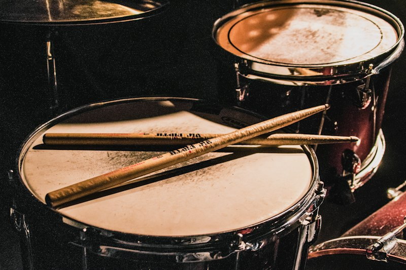

מערכת תופים אקוסטית - הבסיס הקצבי של כל הרכב מוזיקלי
התופים הם כלי נגינה ממשפחת כלי ההקשה, המפיקים צליל כאשר מכים בממברנה המתוחה על גוף התוף. הם נחשבים לאחד מכלי הנגינה העתיקים ביותר בעולם, והעדויות הראשונות לתופים מתוארכות לכ־5500 לפנה״ס.
במהלך ההיסטוריה התפתחו התופים מכלים פשוטים המשמשים לטקסים, תקשורת ומוזיקה, למגוון גדול של כלי הקשה ולמערכת התופים המודרנית המוכרת כיום. מערכת התופים כוללת בדרך כלל:
קיימים גם תופים אלקטרוניים, המפיקים צלילים באמצעות חיישנים ומודול אלקטרוני, ותופי יד כמו דג׳מבה וקונגה, שמנגנים בהם בעיקר באמצעות הידיים.
התופים משמשים ליצירת קצב, ליווי מוזיקלי ולעיתים גם לסולואים מרהיבים, ולכן הם מהווים חלק מרכזי בלהקות ובתזמורות. נגנים מפורסמים כמו: רינגו סטאר, ג׳ון בונהם, ניל פירט ובאדי ריץ׳ תרמו רבות להתפתחות הנגינה על תופים ולהשפעתם על עולם המוזיקה.